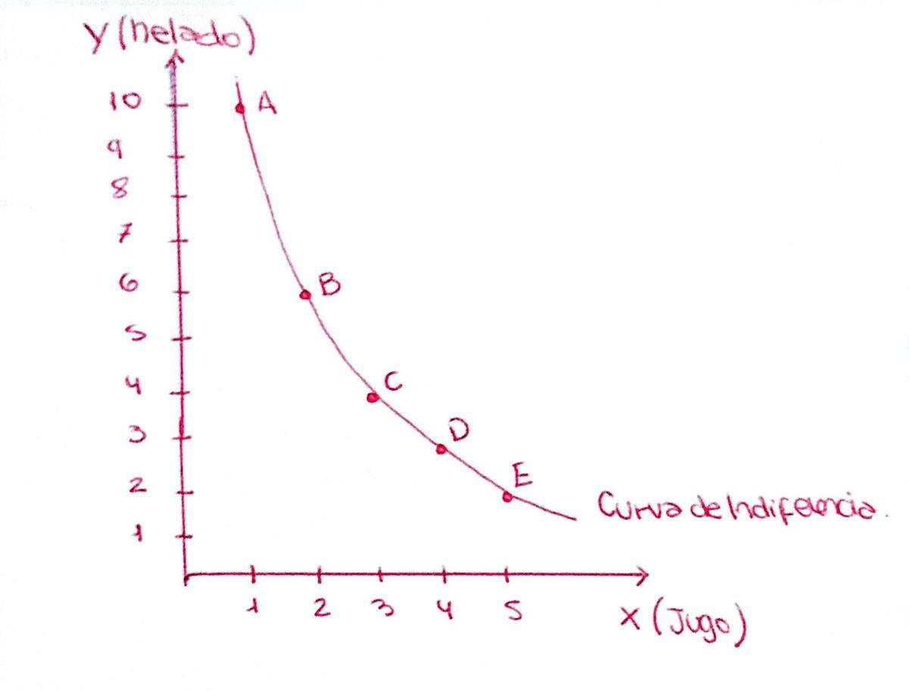
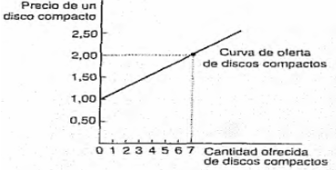
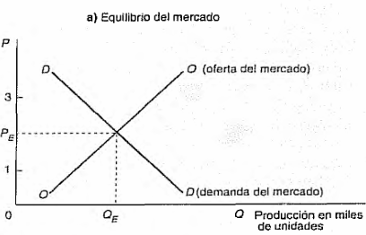
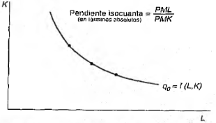
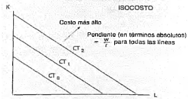
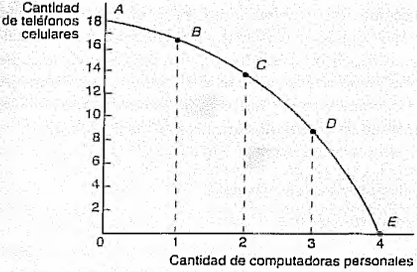
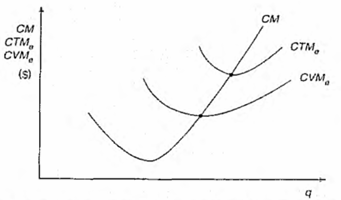
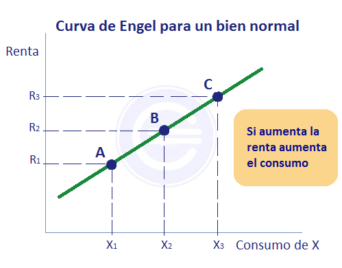
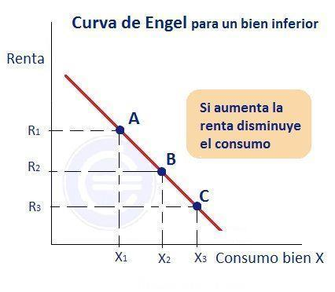
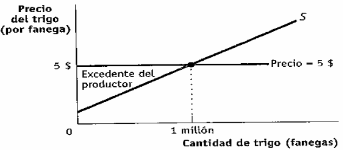

Elasticidad e ingreso total · Oferta (movimiento vs. desplazamiento) · Producción a corto y largo plazo · Isocuanta e isocosto · Costos y excedente del productor. Teoría desde cero + planillas de Excel interactivas en la misma página y un archivo .xlsx descargable con las fórmulas armadas.
Los 8 temas del parcial explicados en criollo, sin vueltas. Si entendés esto, lo demás (fórmulas, gráficos y ejercicios) cae solo. Después, abajo, está todo el detalle.
La elasticidad mide qué tan "sensible" es la gente al precio. Si sube el precio y la gente igual compra casi lo mismo, la demanda es inelástica (necesidad básica: insulina, nafta). Si sube el precio y la gente deja de comprar bastante, es elástica (un auto de lujo). La fórmula: cuánto cambia en % la cantidad dividido cuánto cambia en % el precio, siempre en valor absoluto (sin el signo negativo).
La regla de oro con el Ingreso Total (\(IT=P\times Q\)): si la demanda es elástica (\(E_p>1\)) y bajás el precio, el IT sube (vendés mucho más y compensa). Si es inelástica (\(E_p<1\)) y bajás el precio, el IT baja (no vendés tanto más y perdés plata). En la unitaria (\(E_p=1\)) el IT está en su máximo.
Los cinco tipos a memorizar: perfectamente inelástica (\(E_p=0\), vertical), inelástica (entre 0 y 1), unitaria (\(=1\)), elástica (\(>1\)) y perfectamente elástica (\(E_p\to\infty\), horizontal, típico de competencia perfecta).
La ley de oferta: a mayor precio, los vendedores ofrecen más. La curva sube hacia la derecha (pendiente positiva). La distinción que siempre entra: movimiento sobre la curva = cambia el precio del propio bien (te movés sobre la curva, no se mueve ella). Desplazamiento de la curva = cambia otra cosa: costos de insumos, tecnología, impuestos, cantidad de empresas (se corre toda la curva).
Ejemplo: si sube el precio del pan → movimiento. Si baja el precio de la harina → la curva entera se desplaza a la derecha.
Corto plazo: hay factores fijos que no podés cambiar ya (el local, las máquinas); solo ajustás los variables (contratás o echás gente). Largo plazo: todos los factores son variables (cambiás hasta la planta).
Las dos métricas: PMg (producto marginal) = cuánto produce el último trabajador que contrataste. PMe (producto medio) = producción total dividido total de trabajadores. Mientras PMg > PMe, el promedio sube; cuando PMg < PMe, baja. El PMg cruza al PMe justo en su máximo (igual que si tu última nota es mayor a tu promedio, el promedio sube).
Ley de rendimientos decrecientes: pasado cierto punto, cada trabajador extra agrega menos que el anterior, porque los factores fijos (las máquinas) están al límite.
Dos herramientas para ver cómo la empresa combina trabajo (L) y capital (K). Isocuanta: curva con todas las combinaciones de L y K que producen la misma cantidad (convexa hacia el origen, no se cruzan; más a la derecha = más producción). Isocosto: recta con las combinaciones que cuestan lo mismo: \(CT=w\,L+r\,K\) (w = salario, r = costo del capital), pendiente \(-w/r\).
El óptimo: donde la isocosto es tangente a la isocuanta — ahí el costo es mínimo para esa producción. La condición es \(\dfrac{PMg_L}{w}=\dfrac{PMg_K}{r}\): el último peso gastado rinde igual en cualquier factor.
El economista cuenta más que el contador. Costo contable (explícito): lo que pagás con plata (insumos, sueldos, alquiler). Costo de oportunidad (implícito): lo que resignás por no usar tus recursos en otra cosa (si sos dueño del local no pagás alquiler, pero dejás de ganar lo que ganarías alquilándolo). Costo económico = explícito + implícito.
Beneficio contable = Ingreso − costos explícitos. Beneficio económico = Ingreso − costo económico. Si el económico es positivo, conviene seguir (ganás más que en tu mejor alternativa); si es cero, cubrís todo pero no ganás extra; si es negativo, mejor cerrar o cambiar de negocio.
De la producción salen 7 costos: CF (fijo, no cambia: alquiler), CV (variable: insumos), CT = CF + CV, CFMe = CF/q (siempre baja, repartís el fijo entre más unidades), CVMe = CV/q, CMe = CT/q (en U) y CMg = ΔCT/Δq (costo de la última unidad).
Regla clave: el CMg corta al CMe en su mínimo. Antes: \(CMg<CMe\) (el medio baja). Después: \(CMg>CMe\) (el medio sube). En el mínimo: \(CMg=CMe\) → es la escala eficiente. También entra el punto de equilibrio (cuántas unidades vender para no perder ni ganar): \(Q_e=\dfrac{CF}{P-CV_u}\).
Acá lo que cambia no es el precio, sino el ingreso del bolsillo de la persona. Mide cuánto cambia la cantidad demandada cuando la gente tiene más o menos plata: \(E_I=\dfrac{\%\Delta Q}{\%\Delta\,\text{Ingreso}}\).
Clasificación: \(E_I<0\) → bien inferior (ganás más y comprás menos: arroz de segunda marca). \(0<E_I<1\) → normal necesario (comprás más, pero en menor proporción que el aumento del ingreso: alimentos básicos). \(E_I>1\) → normal de lujo (comprás mucho más: viajes, autos).
No confundir: elasticidad-precio reacciona al precio del bien; elasticidad-ingreso al ingreso de la persona; elasticidad-cruzada al precio de otro bien (positiva = sustitutos, negativa = complementarios).
Es la ganancia extra del vendedor: la diferencia entre el precio que realmente cobra en el mercado y el precio mínimo al que estaba dispuesto a vender. \(\text{Excedente}=\text{Precio de mercado}-\text{Costo mínimo aceptable}\).
Si ibas a vender a $50 y el mercado paga $80, tu excedente es $30 por unidad. En el gráfico es el área entre el precio de mercado y la curva de oferta (el triángulo abajo del precio y arriba de la curva). A mayor elasticidad de la oferta, menor excedente (la curva es más plana, el área es menor). A largo plazo la oferta es más elástica.
T1 · Elasticidad-precio e IT. \(E_p=|\%\Delta Q/\%\Delta P|\). Tipos: perfectamente inelástica (0), inelástica (0–1), unitaria (1), elástica (>1), perfectamente elástica (∞). \(IT=P\times Q\): elástica → baja P sube IT; inelástica → baja P baja IT; unitaria → IT máximo. Arco = método del punto medio. Determinantes: tipo de necesidad, sustitutos, proporción del ingreso, horizonte temporal.
T2 · Oferta. A mayor precio, mayor cantidad (pendiente positiva). Movimiento = cambia el precio del bien; desplazamiento = cambia otra cosa (costos, tecnología, impuestos, n.º de empresas). Elasticidad de la oferta siempre positiva; a LP más elástica.
T3 · Producción. CP: factores fijos + variables, ley de rendimientos decrecientes. LP: todo variable, rendimientos a escala (crecientes/constantes/decrecientes). \(PMg=\Delta PT/\Delta L\), \(PMe=PT/L\); PMg corta al PMe en su máximo (óptimo técnico).
T4 · Isocuanta e isocosto. Isocuanta: igual cantidad (convexa, pendiente negativa, no se cruzan). Isocosto: \(CT_0=wL+rK\), pendiente \(-w/r\). Óptimo = tangencia, condición \(PMg_L/w=PMg_K/r\).
T5 · Costos contable/oportunidad/económico. Contable = explícitos; oportunidad = implícitos (mejor alternativa resignada); económico = explícito + implícito. Beneficio contable = Ingreso − explícitos; económico = Ingreso − económico. >0 conviene, =0 normal, <0 no conviene.
T6 · Familia de costos. \(CT=CF+CV\); \(CFMe=CF/q\); \(CVMe=CV/q\); \(CMe=CT/q\) (=CTMe); \(CMg=\Delta CT/\Delta q\) (=CM). CMg corta al CMe en su mínimo (escala eficiente). Punto de equilibrio \(Q_e=CF/(P-CV_u)\).
T7 · Elasticidad-ingreso. \(E_I=\%\Delta Q/\%\Delta\,\text{Ingreso}\). <0 inferior; 0–1 normal necesario; >1 normal de lujo. No confundir con precio (precio del bien) ni cruzada (precio de otro bien: + sustitutos, − complementarios).
T8 · Excedente del productor. = Precio de mercado − costo mínimo aceptable. En el gráfico: área entre el precio y la curva de oferta. Oferta más elástica → menor excedente.
El parcial mezcla teoría (definiciones y curvas) con práctica en Excel (tablas de ingreso, producción y costos). La clave: leé la teoría corta de cada tema y enseguida tocá la planilla de al lado. Tildá lo que terminás (se guarda solo en este navegador).
Toda la parte práctica del parcial (ingreso, producción, costos) se arma con tablas y fórmulas. Te dejo el archivo con todo ya construido para que veas las fórmulas reales y practiques cambiando datos:
Adentro: Ingreso&Elasticidad · Producción CP · Costos · Costo económico y Excedente · y una hoja de ejercicios en blanco para resolver vos.
No son ocho temas sueltos: es una sola historia — cómo decide una empresa cuánto producir y a qué precio vender.
Elasticidad → ingreso total → elasticidad-ingreso. Qué tan sensible es la gente al precio decide si subir o bajar el precio te conviene (efecto sobre el IT). Y qué tan sensible es al ingreso del bolsillo clasifica al bien (normal, inferior, de lujo).
Producción → costos → decisión. Con cuántos factores producís sale el producto (PMg, PMe); de ahí salen los costos (CT, CMe, CMg). La empresa elige el \(q\) donde le conviene, y combina factores con isocuanta + isocosto para gastar lo mínimo.
Oferta + excedente del productor. La ley de oferta (a más precio, más cantidad) viene del costo marginal. Lo que la empresa gana por vender más caro que su costo mínimo es el excedente del productor.
Para tramos grandes se usa la elasticidad-arco (método del punto medio), que promedia entre los dos puntos para que dé igual subas o bajes:
| Tipo | Valor | Qué significa | Ejemplo |
|---|---|---|---|
| Perfectamente inelástica (rígida) | \(E_p=0\) | la cantidad no cambia pase lo que pase con el precio (curva vertical) | insulina, sal |
| Inelástica | \(0<E_p<1\) | la cantidad reacciona poco | nafta, pan |
| Unitaria | \(E_p=1\) | cantidad y precio cambian igual | punto medio de la demanda |
| Elástica | \(E_p>1\) | la cantidad reacciona mucho | autos, turismo |
| Perfectamente elástica | \(E_p\to\infty\) | a un precio fijo vendés todo; un toque más caro y no vendés nada (curva horizontal) | competencia perfecta |
Siempre se trabaja en valor absoluto (la demanda tiene pendiente negativa, así que el cociente da negativo y se multiplica por −1).

Esta es la tabla típica. Cambiá los precios y cantidades amarillos: el IT, la elasticidad-arco y el tipo se recalculan solos, y el gráfico te muestra la "loma" del ingreso.
| Precio (P) | Cantidad (Q) | IT = P·Q | |Ep| arco | Tipo |
|---|
| Movimiento sobre la curva | Desplazamiento de la curva | |
|---|---|---|
| Qué lo causa | cambia el precio del propio bien | cambia otra cosa (no el precio) |
| Ejemplos | sube el precio → ofrezco más (subo por la misma curva) | costo de insumos, tecnología, impuestos/subsidios, n.º de vendedores, expectativas |
| Resultado | cambia la cantidad ofrecida | cambia la oferta (toda la curva va a la derecha = más, o izquierda = menos) |

La cantidad ofrecida depende del precio del bien, de los precios de los factores (\(r\)), de la tecnología (\(z\)) y del número de empresas (\(H\)). La curva se desplaza a la derecha (más oferta) si bajan los precios de los factores, mejora la tecnología o entran más empresas; a la izquierda en el caso contrario.
Cuando juntás las dos curvas obtenés el equilibrio de mercado: el precio y la cantidad de equilibrio. Si el precio está por debajo del equilibrio hay exceso de demanda (escasez) y tiende a subir; si está por encima, hay exceso de oferta (excedente) y tiende a bajar.

| Corto plazo (CP) | Largo plazo (LP) | |
|---|---|---|
| Factores | hay fijos (capital/planta) y variables (trabajo) | todos variables |
| Qué ajustás | solo el factor variable (contratás/echás gente) | tamaño de planta, tecnología, todo |
| Ley clave | rendimientos marginales decrecientes | rendimientos a escala |
PMg (producto marginal): cuánto suma el último trabajador. PMe (producto medio): la productividad por trabajador.
La productividad (producto por trabajador) explica buena parte del nivel de vida de un país.
Cambiá el Producto Total (PT) amarillo y mirá cómo el PMg crece, llega a un máximo y cae (rendimientos decrecientes), y cómo el PMg cruza al PMe en su pico.
| Trabajo L | Producto Total PT | PMg = ΔPT/ΔL | PMe = PT/L |
|---|
Muestra todas las combinaciones de trabajo (L) y capital (K) que dan la misma cantidad de producto.
Muestra las combinaciones de factores que cuestan lo mismo:
\(w\) = precio del trabajo (salario) · \(r\) = precio del capital. Es una recta.


| Tipo de costo | Qué incluye | Ejemplo |
|---|---|---|
| Contable (explícito) | lo que pagás con plata | insumos, sueldos, alquiler, luz |
| De oportunidad (implícito) | lo que resignás al elegir esto | tu sueldo en otro empleo, el interés del capital propio |
| Económico | explícito + implícito | todo lo de arriba sumado |

CF no cambia con \(q\) (alquiler) · CV sí (insumos) · CMg es lo que cuesta la última unidad.

Cuánto tenés que vender para no perder ni ganar (el ingreso iguala al costo total):
CF = costo fijo · P = precio de venta · CVu = costo variable por unidad.
Cambiá el Costo Fijo y la columna de Costo Variable (amarillos). Todo se recalcula y la fila del CMe mínimo se pinta de azul. El gráfico muestra las curvas en U del CMe y el CMg cruzándose.
| q | CF | CV | CT | CFMe | CVMe | CMe | CMg |
|---|
| Valor de \(E_I\) | Tipo de bien | Qué significa |
|---|---|---|
| \(E_I<0\) (negativa) | Inferior | ganás más → comprás menos (ej. el "segundo marca") |
| \(0<E_I<1\) | Normal necesario | sube algo, pero menos que el ingreso (comida básica) |
| \(E_I>1\) | Normal de lujo | sube más que el ingreso (viajes, autos) |


Si estabas dispuesto a vender a $50 y el mercado paga $80, tu excedente es $30 por unidad. En el gráfico de oferta y demanda es el área entre el precio y la curva de oferta.

Todo lo imprescindible en una pantalla. Esto es lo que tenés que poder recitar el día del parcial.
Elástica \(>1\): baja P → sube IT. Inelástica \(<1\): baja P → baja IT. Unitaria \(=1\): IT máximo.
A más P, más Q (sube). Cambia P → movimiento sobre la curva. Cambia otra cosa (costos, tecnología, impuestos) → desplaza la curva.
CP: hay factor fijo. LP: todo variable. PMg corta al PMe en su máximo.
Isocuanta: igual producción. Isocosto: igual costo (pend. \(-w/r\)). Óptimo = tangencia: \(\tfrac{PMg_L}{w}=\tfrac{PMg_K}{r}\).
CMe mínimo donde CMg = CMe. Económico = explícito + implícito.
\(<0\) inferior · \(0\text{–}1\) necesario · \(>1\) lujo. Excedente productor = P mercado − costo mínimo.
Hacelo como simulacro: resolvé primero, abrí la solución recién después para corregirte.
(a) \(\Delta\%Q=\dfrac{40-20}{(20+40)/2}=\dfrac{20}{30}=0{,}667\); \(\ \Delta\%P=\dfrac{6-8}{(8+6)/2}=\dfrac{-2}{7}=-0{,}286\). \(E_p=\left|\dfrac{0{,}667}{-0{,}286}\right|\approx 2{,}33\).
(b) Como \(E_p>1\) → elástica.
(c) IT antes \(=8\times20=160\); IT después \(=6\times40=240\). El IT subió (bajó el precio y, por ser elástica, el ingreso aumentó). ✔
PMg (resto cada PT con el anterior): —, 12, 16, 11, 7.
PMe (PT/L): —, 12, 14, 13, 11,5.
El PMe sube hasta \(L=2\) (14) y después baja. Coincide con que ahí el PMg (11) cae por debajo del PMe (14): a partir de ese punto el promedio baja. ✔
CT (=CF+CV): 65, 85, 100, 120, 150.
CMe (=CT/q): 65, 42,5, 33,3, 30, 30.
CMg (=ΔCT): 25, 20, 15, 20, 30.
El CMe mínimo está en torno a q = 4 (CMe = 30), donde el CMg (20) todavía está por debajo o igualando al CMe y empieza a empujarlo hacia arriba. A partir de ahí el CMe sube. ✔
(a) Contable \(=300.000-180.000=\$120.000\).
(b) Costo económico \(=180.000+70.000=250.000\). Económico \(=300.000-250.000=\$50.000\).
(c) El beneficio económico es positivo ($50.000) → conviene seguir: incluso descontando lo que resignó, gana más que en la alternativa. ✔
La harina es un insumo (no es el precio del pan). Entonces se desplaza toda la curva de oferta, y como el costo subió, se corre hacia la izquierda (menos oferta a cada precio). Si en cambio subiera el precio del pan, sería un movimiento sobre la curva (más cantidad ofrecida). ✔
Excedente del productor = diferencia entre el precio de mercado y el costo mínimo al que el productor aceptaba vender (su "ganancia" por vender más caro de lo mínimo).
Elasticidad mayor a LP: en el largo plazo todos los factores son variables, así que la empresa puede ampliar la planta, contratar más, invertir. Con tiempo, ante una suba de precio puede aumentar mucho más la cantidad ofrecida → la oferta responde más → es más elástica. ✔
Cálculo. La pendiente entre los puntos es \(\frac{\Delta Q}{\Delta P}=\frac{90-50}{10-20}=-4\). Aplico \(E=\frac{\Delta Q}{\Delta P}\cdot\frac{P}{Q}\):
En A: \(E=-4\cdot\frac{20}{50}=-1{,}6\Rightarrow |E|=1{,}6\). En B: \(E=-4\cdot\frac{10}{90}=-0{,}44\Rightarrow |E|=0{,}44\).
Cálculo (método del arco). \(\Delta\%Q=\frac{150-200}{(200+150)/2}=\frac{-50}{175}=-0{,}286\); \(\ \Delta\%P=\frac{10000-8000}{(8000+10000)/2}=\frac{2000}{9000}=0{,}222\). \(|E|=\left|\frac{-0{,}286}{0{,}222}\right|=1{,}29\).
Ingreso total. Antes: \(200\times8000=\$1.600.000\). Después: \(150\times10000=\$1.500.000\).
Cálculo. \(P=10\Rightarrow Q=500,\ IT=5000\). \(P=12\Rightarrow Q=400,\ IT=4800\).
Elasticidad \(E=\frac{dQ}{dP}\cdot\frac{P}{Q}\) con \(\frac{dQ}{dP}=-50\): en \(P=10\): \(E=-50\cdot\frac{10}{500}=-1\) (unitaria); en \(P=12\): \(E=-50\cdot\frac{12}{400}=-1{,}5\) (elástica).
Cálculo (arco). \(\Delta\%Q_{té}=\frac{330-300}{315}=0{,}095\); \(\ \Delta\%P_{café}=\frac{6-5}{5{,}5}=0{,}182\). \(E_{xy}=\frac{0{,}095}{0{,}182}=+0{,}52\).
Cálculo. \(E_I=\frac{\Delta\%Q}{\Delta\%Y}=\frac{240/800}{5000/20000}=\frac{0{,}30}{0{,}25}=1{,}2\) (con método del arco da \(\approx1{,}17\), mismo signo y mismo tipo).
Cálculo / lectura. A medida que sube el ingreso, el gasto en alimentos sube (400 → 1300), así que la curva de Engel tiene pendiente positiva. Pero la proporción gastada en alimentos cae: \(400/1000=40\%\) y \(1300/5000=26\%\).
Respuesta (es 100% teórica — hay que explicar cada caso):
Cálculo. \(EP=\text{Precio de mercado}-\text{Costo mínimo aceptable}=80-50=\$30\) por unidad.
Cálculo. \(Q_o(5)=13\), \(Q_o(6)=15\). Punto en \(P=5\): \(E=\frac{dQ}{dP}\cdot\frac{P}{Q}=2\cdot\frac{5}{13}=0{,}77\) (por arco da \(\approx0{,}79\)).
Cálculo (\(PMg=\Delta PT\), \(PMe=PT/L\)):
| L | PT | PMg | PMe |
|---|---|---|---|
| 1 | 55 | 55 | 55,0 |
| 2 | 114 | 59 | 57,0 |
| 3 | 250 | 136 | 83,3 |
| 4 | 381 | 131 | 95,3 |
| 5 | 500 | 119 | 100,0 |
| 6 | 580 | 80 | 96,7 |
| 7 | 653 | 73 | 93,3 |
| 8 | 695 | 42 | 86,9 |
| 9 | 720 | 25 | 80,0 |
| 10 | 720 | 0 | 72,0 |
Cálculo. Duplicar los factores debería duplicar la producción a \(60\times2=120\) si fueran constantes. Comparo cada caso con 120:
Cálculo. Explícitos (lo que paga): \(70.000+50.000=\$120.000\). Implícitos (lo que resigna): alquiler no cobrado \(30.000\) + sueldo de electricista resignado \(200.000=\$230.000\).
Costo contable = explícitos = $120.000. Costo de oportunidad = implícitos = $230.000. Costo económico = \(120.000+230.000=\) $350.000.
Cálculo (\(CT=CF+CV\), \(CMg=\Delta CT\), \(CTMe=CT/q\), \(CFMe=45/q\), \(CVMe=CV/q\)):
| q | CV | CT | CMg | CTMe | CFMe | CVMe |
|---|---|---|---|---|---|---|
| 1 | 22,5 | 67,5 | 22,5 | 67,5 | 45,0 | 22,5 |
| 2 | 35 | 80,0 | 12,5 | 40,0 | 22,5 | 17,5 |
| 3 | 45 | 90,0 | 10,0 | 30,0 | 15,0 | 15,0 |
| 4 | 52,5 | 97,5 | 7,5 | 24,4 | 11,3 | 13,1 |
| 5 | 62,5 | 107,5 | 10,0 | 21,5 | 9,0 | 12,5 |
| 6 | 77,5 | 122,5 | 15,0 | 20,4 | 7,5 | 12,9 |
| 7 | 93,7 | 138,7 | 16,2 | 19,8 | 6,4 | 13,4 |
| 8 | 115 | 160,0 | 21,3 | 20,0 | 5,6 | 14,4 |
| 9 | 143,7 | 188,7 | 28,7 | 21,0 | 5,0 | 16,0 |
| 10 | 177,5 | 222,5 | 33,8 | 22,3 | 4,5 | 17,8 |
Cálculo. Isocosto: \(wL+rK=C \Rightarrow 10L+20K=C \Rightarrow K=\frac{C}{20}-\frac{1}{2}L\).
Con \(C_0=400\): \(K=20-0{,}5L\) (corta los ejes en \(K=20\) y \(L=40\)). Con \(C_1=600\): \(K=30-0{,}5L\) (\(K=30\), \(L=60\)).
Cálculo. \(L\cdot K=30 \Rightarrow K=\dfrac{30}{L}\). Algunos puntos: \((L,K)=(2;15),(3;10),(5;6),(6;5),(10;3),(15;2)\).
Cálculo. Condición de óptimo: \(\dfrac{PML}{w}=\dfrac{PMK}{r}\Rightarrow \dfrac{K}{15}=\dfrac{L}{30}\Rightarrow L=2K\).
Reemplazo en la isocosto \(wL+rK=750\): \(15(2K)+30K=750\Rightarrow 60K=750\Rightarrow K=12{,}5,\ L=25\).
Hecho desde los apuntes de cátedra · UCES · Fundamentos de Economía I · 2026.
Fórmulas con KaTeX · Planillas interactivas y gráficos propios · Excel con openpyxl. ¡Éxitos en el parcial! 💪